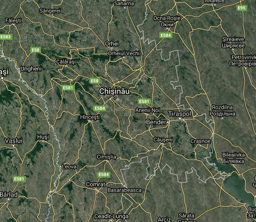

Roşcani, raionul Anenii Noi
| Statut:Sat Prima atestare:1860 Populația:2563 locuitori Roşcani este un sat şi comună din raionul Anenii Noi. Satul are o suprafaţă de circa 3.45 kilometri pătraţi, cu un perimetru de 11.56 km. Roşcani este unicul sat din comuna cu acelaşi nume. Satul Roșcani este situat la o distanță de 7 km de orașul Anenii Noi și la 39 km de Chișinău. Menționat documentar în 1860.Satul Roşcani este o localitate in Raionul Anenii Noi situata la latitudinea 46.9005 longitudinea 29.3205 si altitudinea de 42 metri fata de nivelul marii. |  |

|
Imnul satului
Satul meu nemuritor, Câmp roditor,glas de izvor. Satul meu încântător, Leagăn de jale şi dor. Satul meu înfloritor, Vin în urcior ,pâine-n cuptor. Satul meu aromitor Cu iz de crin şi bujor. | Refren: O,satule,să trăieşti la mulţi ani, Copilărie pe nume Roşcani, Rază de soare din sufletul meu, Multicolor curcubeu. Satulmeu cântec şi joc, Vatră de foc,floare de soc. Satul meu dulce loc, Care mi-aduce noroc. Mădălina Budişteanu |
| Pagina anterioară | Pagina succesoare |